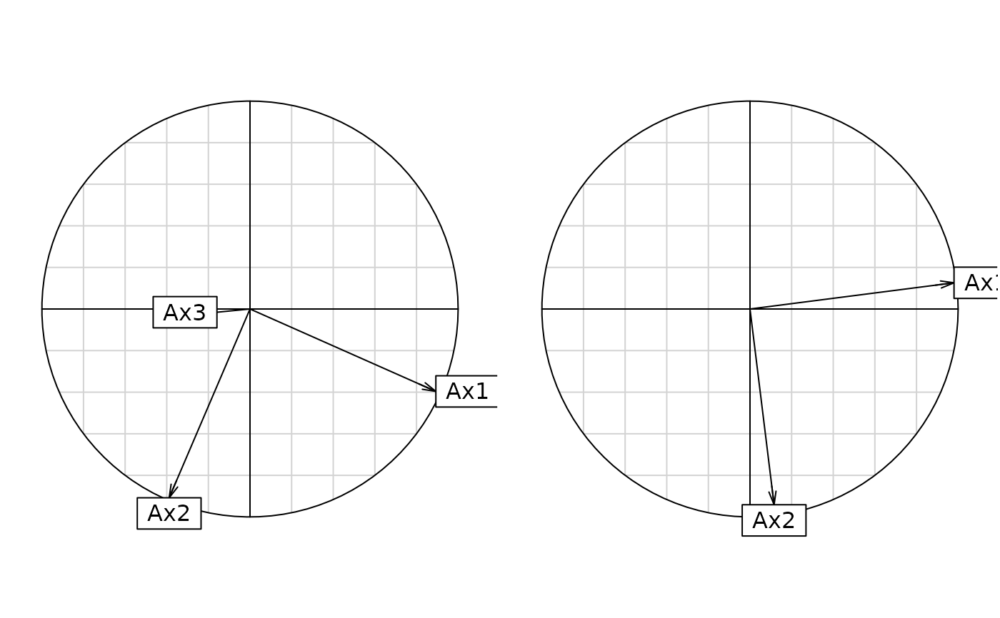

Coinertia Analysis
coinertia.RdThe coinertia analysis performs a double inertia analysis of two tables.
Arguments
- dudiX
a duality diagram providing from one of the functions dudi.coa, dudi.pca, ...
- dudiY
a duality diagram providing from one of the functions dudi.coa, dudi.pca, ...
- scannf
a logical value indicating whether the eigenvalues bar plot should be displayed
- nf
if scannf FALSE, an integer indicating the number of kept axes
- x, object
an object of class 'coinertia'
- xax, yax
the numbers of the x-axis and the y-axis
- ...
further arguments passed to or from other methods
Value
Returns a list of class 'coinertia', sub-class 'dudi' containing:
- call
call
- rank
rank
- nf
a numeric value indicating the number of kept axes
- RV
a numeric value, the RV coefficient
- eig
a numeric vector with all the eigenvalues
- lw
a numeric vector with the rows weigths (crossed table)
- cw
a numeric vector with the columns weigths (crossed table)
- tab
a crossed table (CT)
- li
CT row scores (cols of dudiY)
- l1
Principal components (loadings for cols of dudiY)
- co
CT col scores (cols of dudiX)
- c1
Principal axes (cols of dudiX)
- lX
Row scores (rows of dudiX)
- mX
Normed row scores (rows of dudiX)
- lY
Row scores (rows of dudiY)
- mY
Normed row scores (rows of dudiY)
- aX
Correlations between dudiX axes and coinertia axes
- aY
Correlations between dudiY axes and coinertia axes
References
Dolédec, S. and Chessel, D. (1994) Co-inertia analysis: an alternative method for studying species-environment relationships.
Freshwater Biology, 31, 277--294.
Dray, S., Chessel, D. and J. Thioulouse (2003) Co-inertia analysis and the linking of the ecological data tables. Ecology, 84, 11, 3078--3089.
Author
Daniel Chessel
Anne-Béatrice Dufour anne-beatrice.dufour@univ-lyon1.fr
Examples
data(doubs)
dudi1 <- dudi.pca(doubs$env, scale = TRUE, scan = FALSE, nf = 3)
dudi2 <- dudi.pca(doubs$fish, scale = FALSE, scan = FALSE, nf = 2)
coin1 <- coinertia(dudi1,dudi2, scan = FALSE, nf = 2)
coin1
#> Coinertia analysis
#> call: coinertia(dudiX = dudi1, dudiY = dudi2, scannf = FALSE, nf = 2)
#> class: coinertia dudi
#>
#> $rank (rank) : 11
#> $nf (axis saved) : 2
#> $RV (RV coeff) : 0.4505569
#>
#> eigenvalues: 119 13.87 0.7566 0.5278 0.2709 ...
#>
#> vector length mode content
#> 1 $eig 11 numeric Eigenvalues
#> 2 $lw 27 numeric Row weigths (for dudi2 cols)
#> 3 $cw 11 numeric Col weigths (for dudi1 cols)
#>
#> data.frame nrow ncol content
#> 1 $tab 27 11 Crossed Table (CT): cols(dudi2) x cols(dudi1)
#> 2 $li 27 2 CT row scores (cols of dudi2)
#> 3 $l1 27 2 Principal components (loadings for dudi2 cols)
#> 4 $co 11 2 CT col scores (cols of dudi1)
#> 5 $c1 11 2 Principal axes (loadings for dudi1 cols)
#> 6 $lX 30 2 Row scores (rows of dudi1)
#> 7 $mX 30 2 Normed row scores (rows of dudi1)
#> 8 $lY 30 2 Row scores (rows of dudi2)
#> 9 $mY 30 2 Normed row scores (rows of dudi2)
#> 10 $aX 3 2 Corr dudi1 axes / coinertia axes
#> 11 $aY 2 2 Corr dudi2 axes / coinertia axes
#>
#> CT rows = cols of dudi2 (27) / CT cols = cols of dudi1 (11)
summary(coin1)
#> Coinertia analysis
#>
#> Class: coinertia dudi
#> Call: coinertia(dudiX = dudi1, dudiY = dudi2, scannf = FALSE, nf = 2)
#>
#> Total inertia: 134.7
#>
#> Eigenvalues:
#> Ax1 Ax2 Ax3 Ax4 Ax5
#> 119.0194 13.8714 0.7566 0.5278 0.2709
#>
#> Projected inertia (%):
#> Ax1 Ax2 Ax3 Ax4 Ax5
#> 88.3570 10.2978 0.5617 0.3918 0.2011
#>
#> Cumulative projected inertia (%):
#> Ax1 Ax1:2 Ax1:3 Ax1:4 Ax1:5
#> 88.36 98.65 99.22 99.61 99.81
#>
#> (Only 5 dimensions (out of 11) are shown)
#>
#> Eigenvalues decomposition:
#> eig covar sdX sdY corr
#> 1 119.01942 10.909602 2.326324 6.422570 0.7301798
#> 2 13.87137 3.724429 1.685078 2.863743 0.7718017
#>
#> Inertia & coinertia X (dudi1):
#> inertia max ratio
#> 1 5.411785 6.321624 0.8560752
#> 12 8.251272 8.553220 0.9646978
#>
#> Inertia & coinertia Y (dudi2):
#> inertia max ratio
#> 1 41.24940 42.74627 0.9649824
#> 12 49.45042 50.90461 0.9714331
#>
#> RV:
#> 0.4505569
if(adegraphicsLoaded()) {
g1 <- s.arrow(coin1$l1, plab.cex = 0.7)
g2 <- s.arrow(coin1$c1, plab.cex = 0.7)
g3 <- s.corcircle(coin1$aX, plot = FALSE)
g4 <- s.corcircle(coin1$aY, plot = FALSE)
cbindADEg(g3, g4, plot = TRUE)
g5 <- plot(coin1)
} else {
s.arrow(coin1$l1, clab = 0.7)
s.arrow(coin1$c1, clab = 0.7)
par(mfrow = c(1,2))
s.corcircle(coin1$aX)
s.corcircle(coin1$aY)
par(mfrow = c(1,1))
plot(coin1)
}
#> Error in s.corcircle(dfxy = coin1$aX, xax = 1, yax = 2, plot = FALSE, storeData = TRUE, pos = -3, psub = list(text = "Unconstrained axes (X)"), pbackground = list(box = FALSE), plabels = list(cex = 1.25)): non convenient selection for dfxy (can not be converted to dataframe)
